Префектура Кагава · архипелаг Сиваку · Хондзима, Хиросима, Тэсима
Острова Сиваку: флот, ремесло и камень
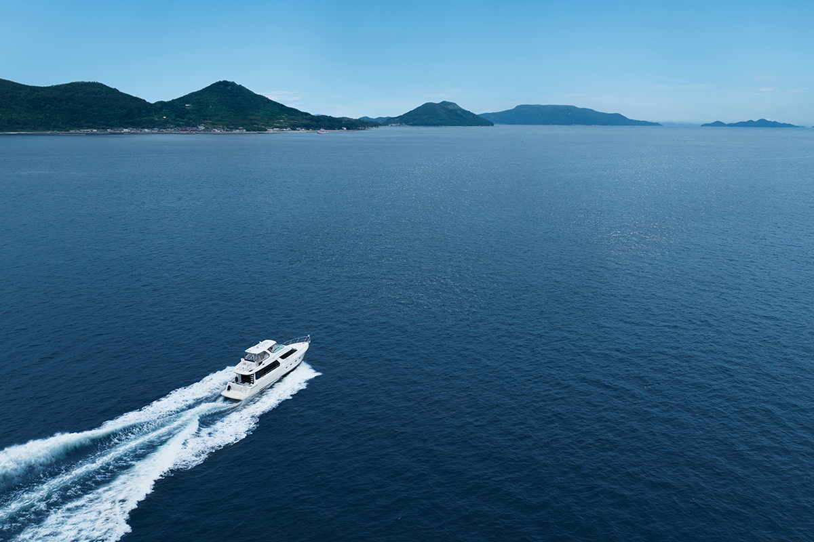
К северу от Такамацу лежат 28 островов Сиваку. В эпоху Муромати и Эдо их жители разбогатели на морских перевозках, а плотники с этих островов строили храмы и дома по всему побережью. Сегодня до трёх из них, Хондзимы, Хиросимы и Тэсимы, ходят регулярные паромы из Маругамэ.
История
Моряки, которым доверяли
Пока сушей было трудно ездить, грузы и людей везли морем, и пролив Бисан оказался одним из главных перекрестков этого пути. В водах Сиваку течение меняется часто, поэтому здесь ценили опытных моряков: с периода Сэнгоку до эпохи Эдо они выступали как флот Сиваку, и морские перевозки на островах пережили подъем.
О силе местных моряков говорит такой факт: из 96 человек экипажа «Канрин-мару», главного корабля флота сёгуната, 35 были родом с островов Сиваку. В эпоху Эдо эта земля получила права автономной территории и не принадлежала ни одному княжеству. Доверие объясняли просто: суда, которые строили моряки Сиваку, считались прочными и быстроходными. К середине эпохи Эдо морские перевозки угасли, но островитяне обратились к другому ремеслу, плотницкому: они строили святилища, храмы и жилые дома, и по сей день в постройках на островах видна работа плотников Сиваку.
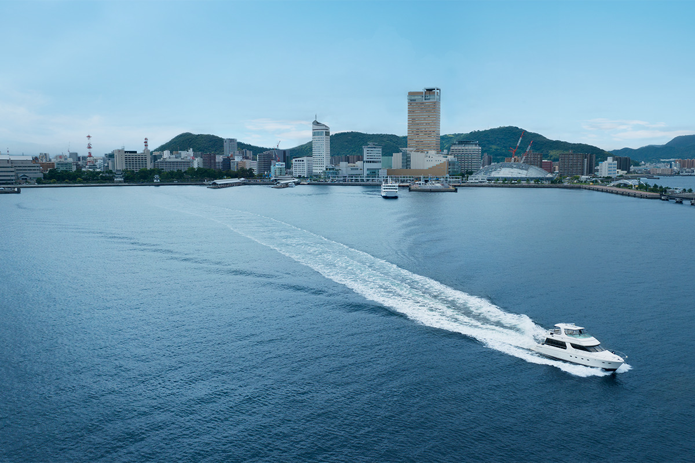
Хондзима
Хондзима: улицы, построенные с расчетом
Хондзима была главным островом архипелага: под управлением сёгуната она сохраняла самоуправление. Особенно известен район Касасима, портовый город, который рос с эпохи Эдо как база флота Сиваку и признан охраняемым районом традиционной застройки. В поселке до сих пор стоят дома под черепичными крышами с белой штукатуркой, «морскими» стенами намако и решетчатыми окнами сэмбон-госи; улицы намеренно изгибали, а перекрестки делали Т-образными, чтобы подходы к городу с моря было трудно просматривать.
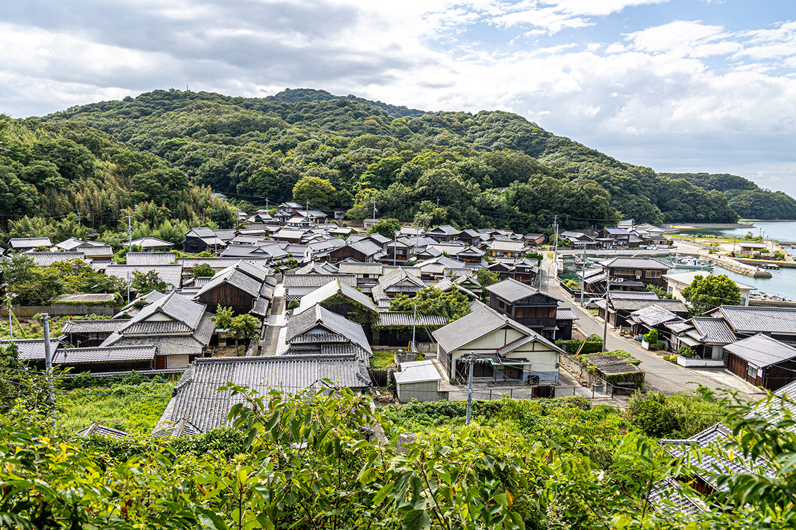
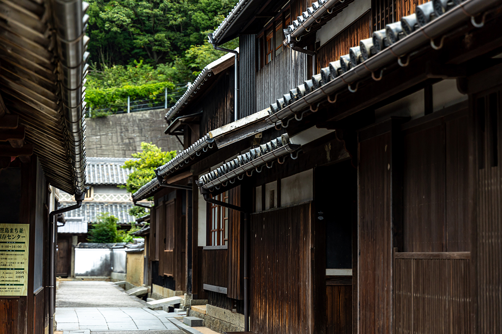
В конце эпохи Эдо на остров заходил Зибольд (1796–1866), немецкий врач и исследователь; он служил при голландской фактории на острове Дэдзима и познакомил Европу с природой и бытом Японии, а этот порт, как рассказывают, назвал одним из лучших на Сэтоути. Осмотреть район с гидом можно за 2 000 иен за три часа, заявки принимает центр острова Хондзима.
Традиции здесь продолжают и в новом деле: на Хондзиме варят натуральное пиво. Пивоварня использует то, что растёт рядом (фрукты, мёд, соль Сэтоути), поэтому постоянной линейки нет и сорта сменяют друг друга. Купленное пиво советуют пить прямо у моря.
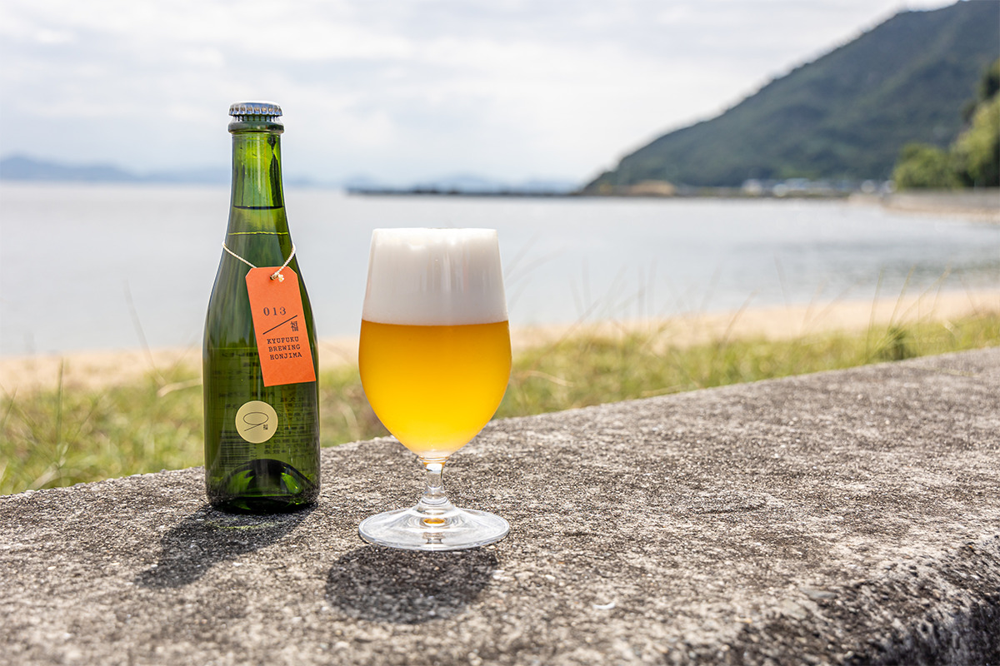
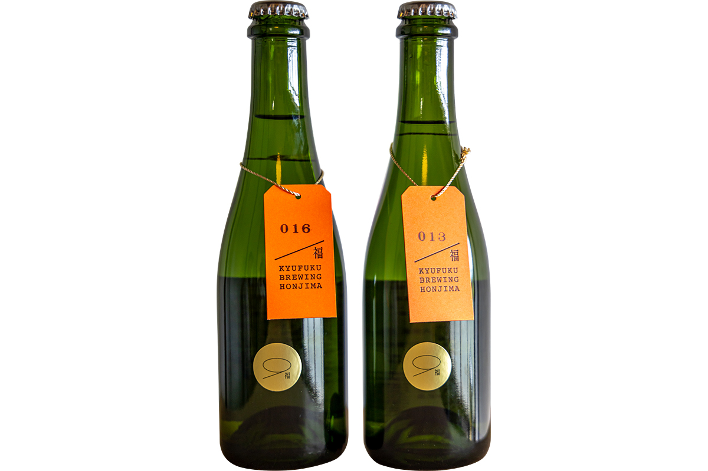
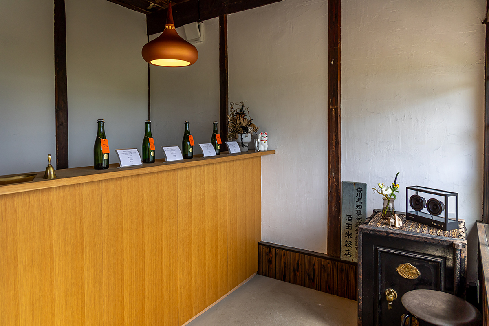
Хиросима
Хиросима: остров камня
Хиросима это самый большой из островов Сиваку, и путать его с городом Хиросима не нужно: это остров в архипелаге у берегов Кагавы. Здесь сохранилась усадьба «Оноэ-тэй», дом семьи, разбогатевшей в конце эпохи Эдо на морских перевозках. В надвратном корпусе и главном доме заметна высокая работа плотников Сиваку, а стены сложены из камня аоки-иси и включены в список культурных объектов японского наследия «Острова камня Сэтоути».
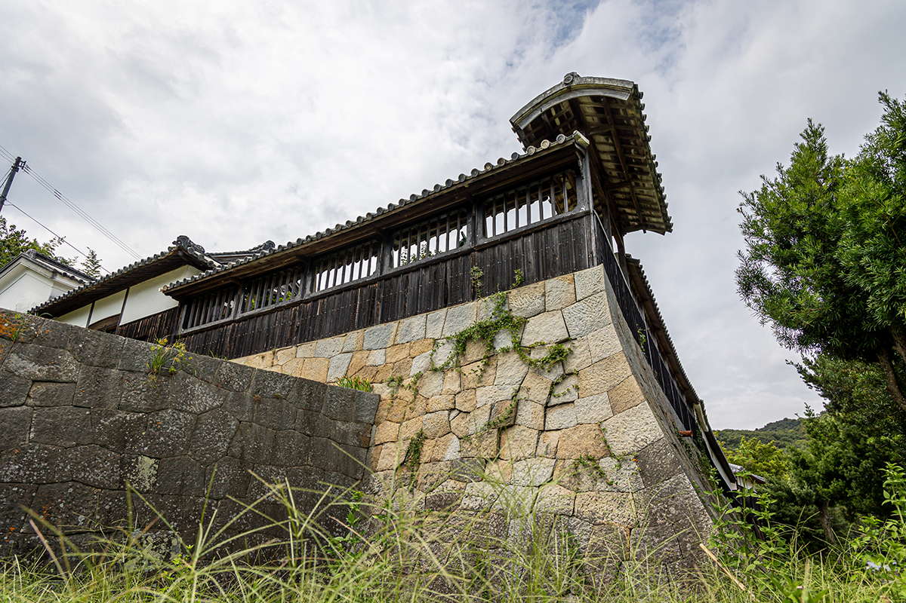
Остров вырос на добыче гранита аоки-иси: в зелени там и тут открываются огромные стены старых каменоломен. Есть на Хиросиме и высшая точка архипелага, гора Отодзан высотой 312 метров. У вершины выветренный гранит превратился в песок, среди которого стоят оставшиеся валуны, поэтому место называют «пустыней Отодзан».
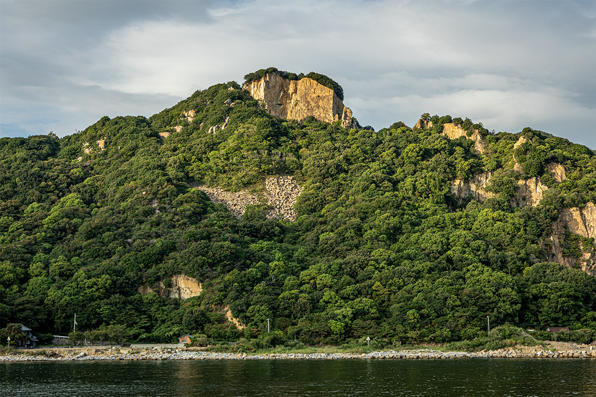
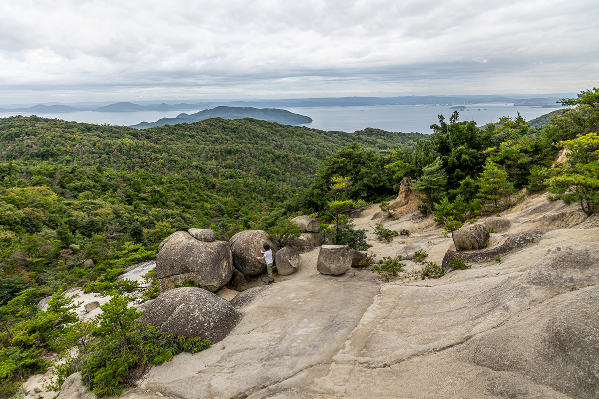
Подъем от начала тропы занимает около часа, а с плато открывается вид на Сэтоути и острова архипелага. Вопросы принимает центр острова Хиросима.
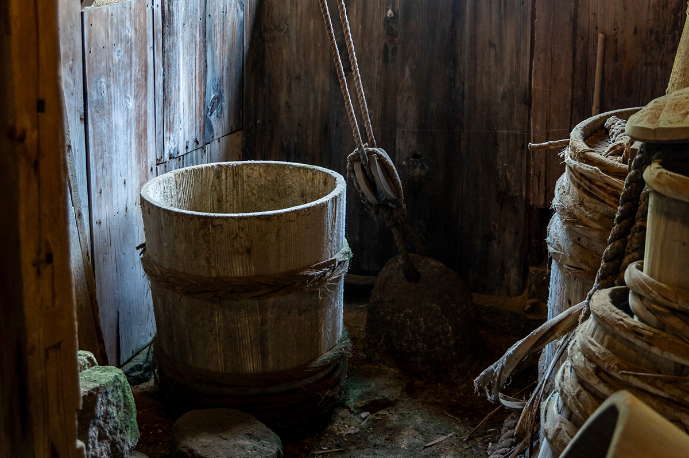
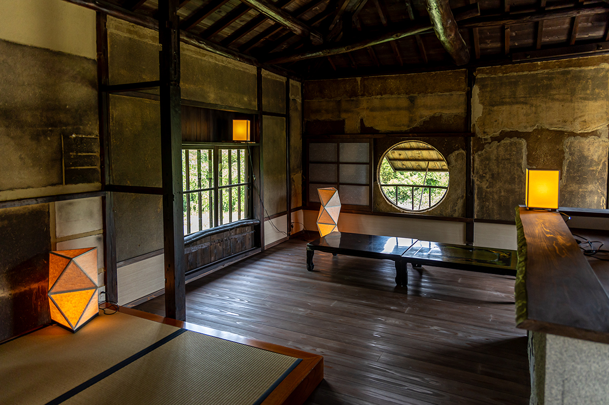
Тэсима
Ремесло на Тэсиме
На маленькой Тэсиме работает гончарная мастерская «Тэсима тоэн»: двое керамистов переехали сюда и делают посуду так, что почти все материалы берут на самом острове: глину, ракушки, растения для глазури, даже дрова для печи; отдельная статья о мастерской уже выходила на сайте.
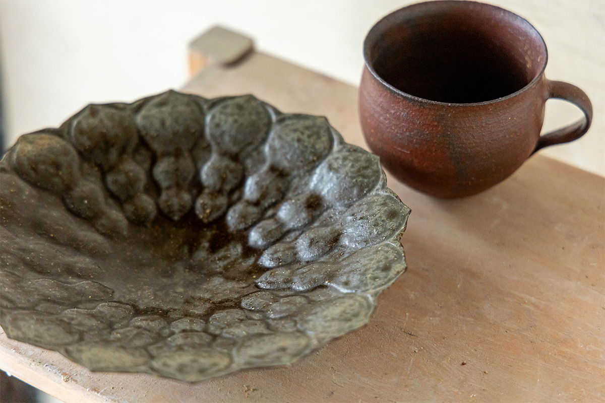
Практика
Что стоит знать перед поездкой
Все три острова относятся к городу Маругамэ, и до них можно дойти на регулярных паромах. На острове Хондзима главный адрес это район Касасима: тут работают центр сохранения застройки и центр острова, где можно заказать гида.
Как добраться
- Паромы из Маругамэ
- Honjima Kisen: паромы до Хондзимы и Усимы, телефон +81 877-22-2782; Bisan Ferry: паромы до Хиросимы, Котэсимы и Тэсимы, телефон +81 877-22-3318
- Цены
- из Маругамэ на Хондзиму: 560 иен для взрослого в одну сторону
- Время в пути
- из Маругамэ в порт Эноура на Хиросиме: около 45 минут по расписанию
- Сайты
- honjima-kisen.com · bisan-ferry.jp
Касасима, остров Хондзима
- Адрес
- префектура Кагава, Маругамэ, Хондзима-тё, Касасима
- Телефон
- +81 877-27-3828, центр сохранения застройки Касасима
- Часы работы
- 9:00–16:00
- Выходные
- понедельник (если это праздник, то следующий день), с 29 декабря по 3 января
- Цены
- центр сохранения застройки: 200 иен для взрослых, детям бесплатно; гид: 2 000 иен за три часа
- Как добраться
- 25 минут пешком от порта Хондзима
Пивоварня «Кюфуку брюинг Хондзима»
- Адрес
- префектура Кагава, Маругамэ, Хондзима-тё, Томари, 704-2
- Выходные
- дни и часы работы стоит уточнять в аккаунте пивоварни
- Цены
- 375 мл: 1 200 и 1 100 иен за два сорта из статьи
- Сайт
- kyu-fuku.com
Усадьба «Оноэ-тэй», остров Хиросима
- Адрес
- префектура Кагава, Маругамэ, Хиросима-тё, Татэиси, 443
- Телефон
- +81 877-29-2332
- Цены
- ночевка: 10 000 иен для взрослых, 5 000 иен для детей до средней школы, детям до школы бесплатно; осмотр по предварительной записи: 500 иен
Фото: Синтаро Мияваки, Микуто Танака.